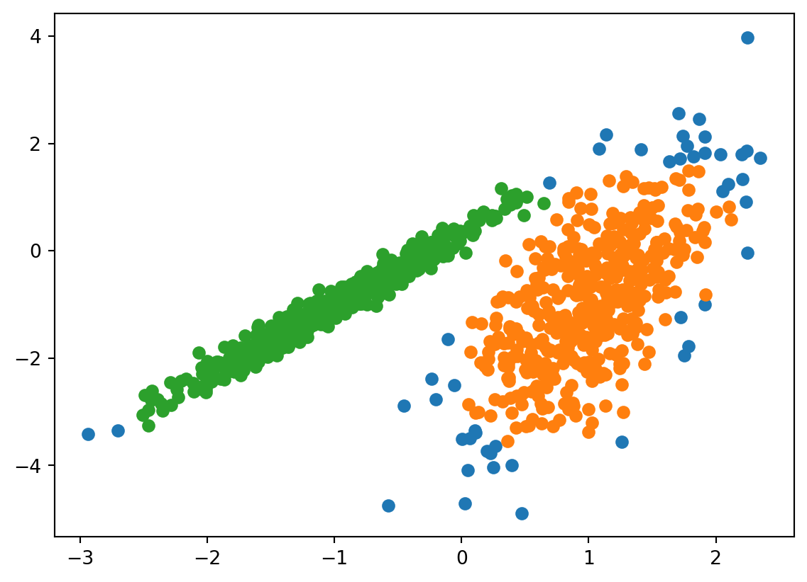
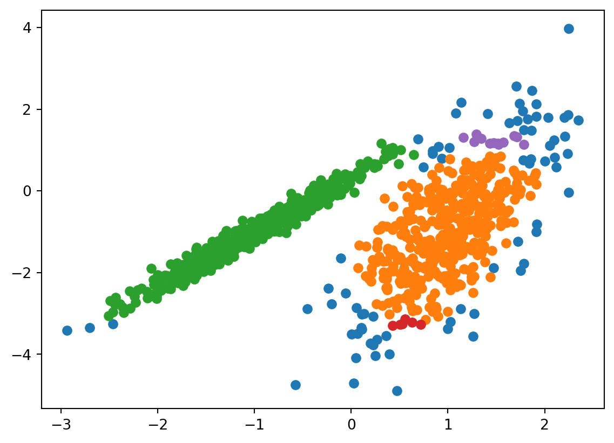
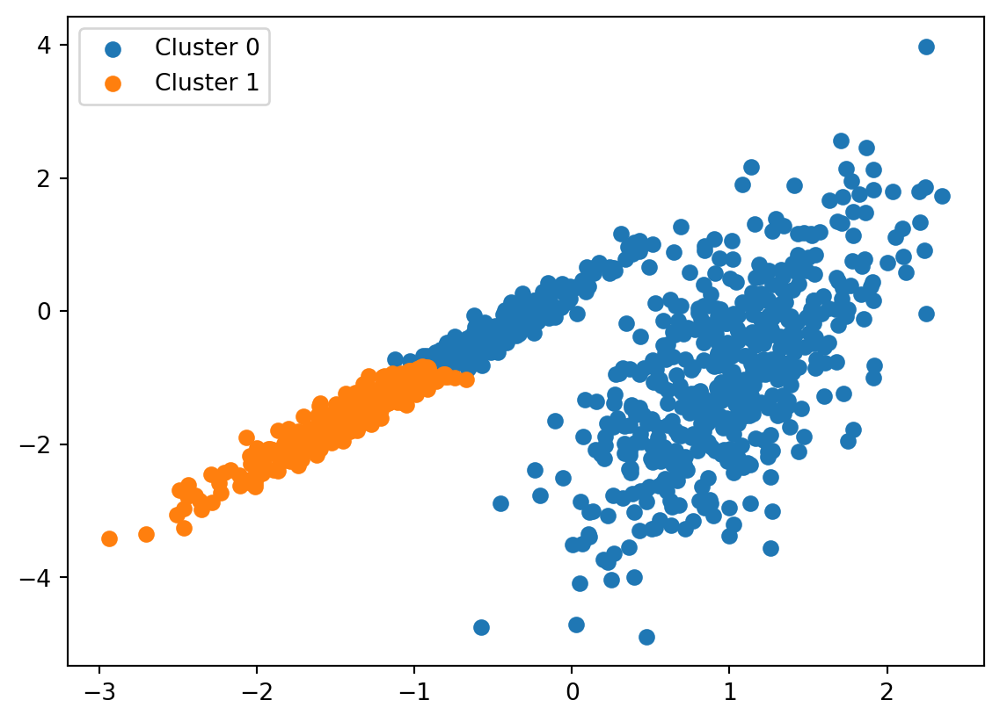
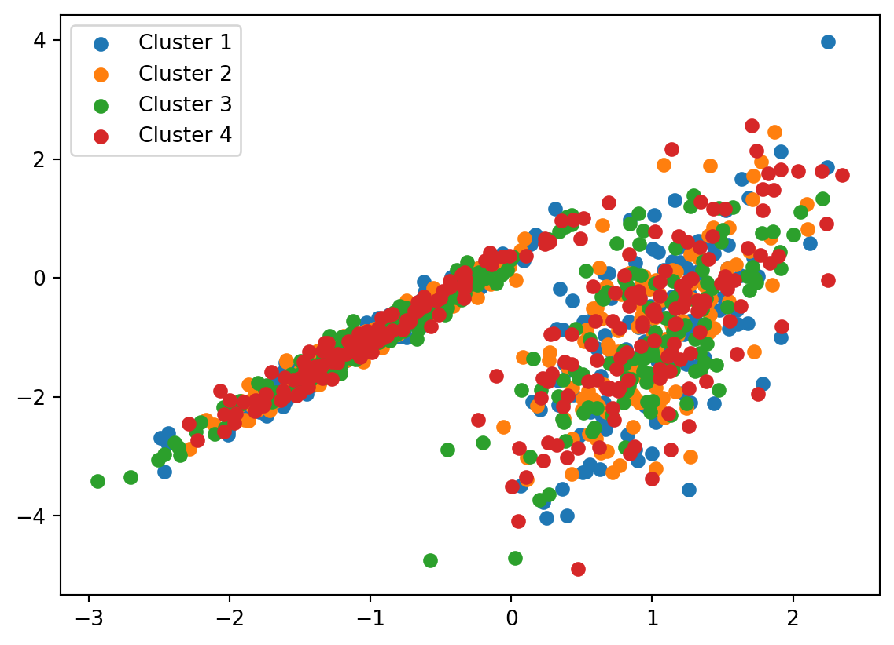
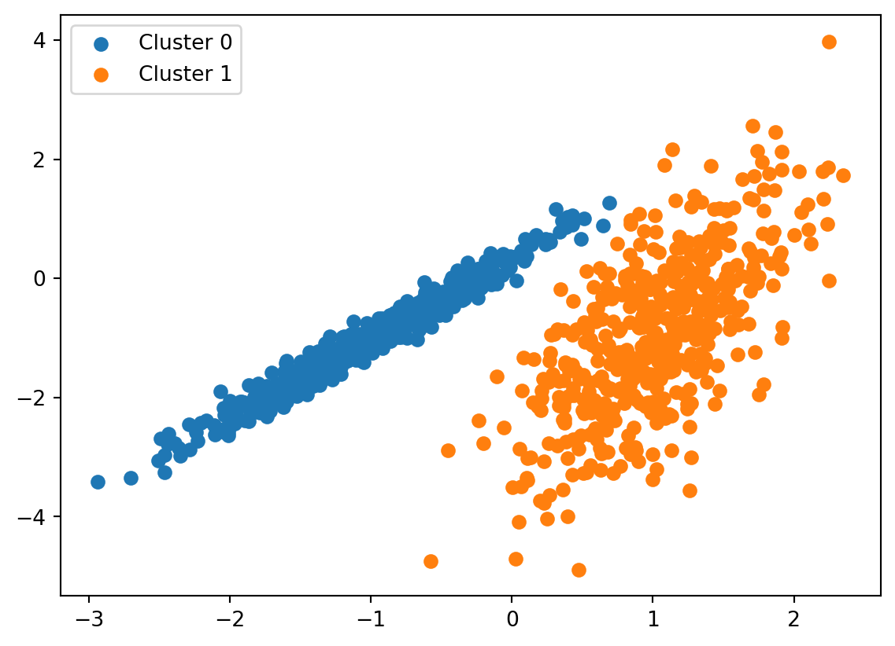
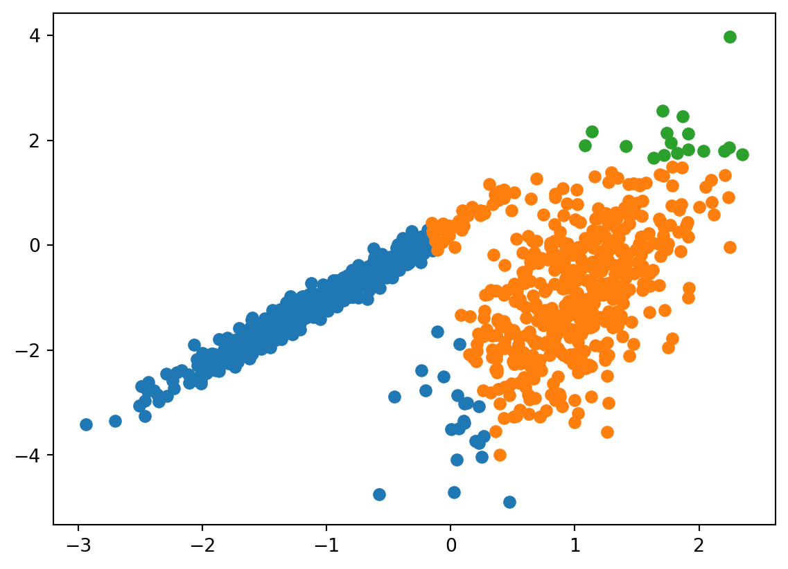
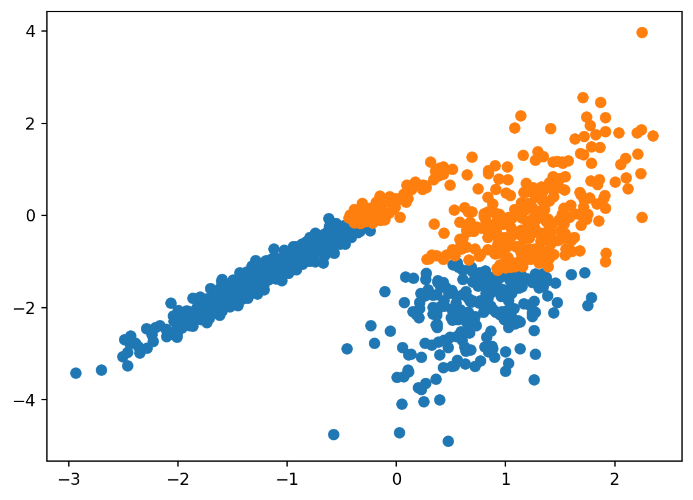
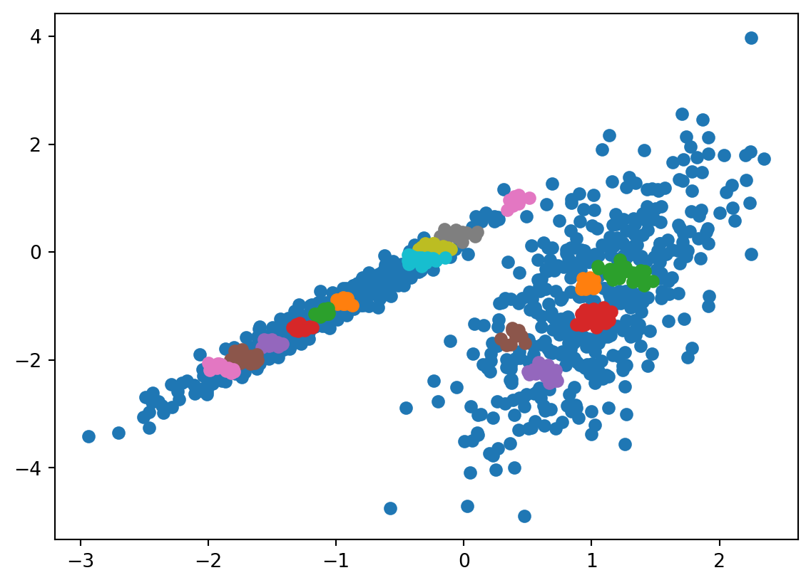
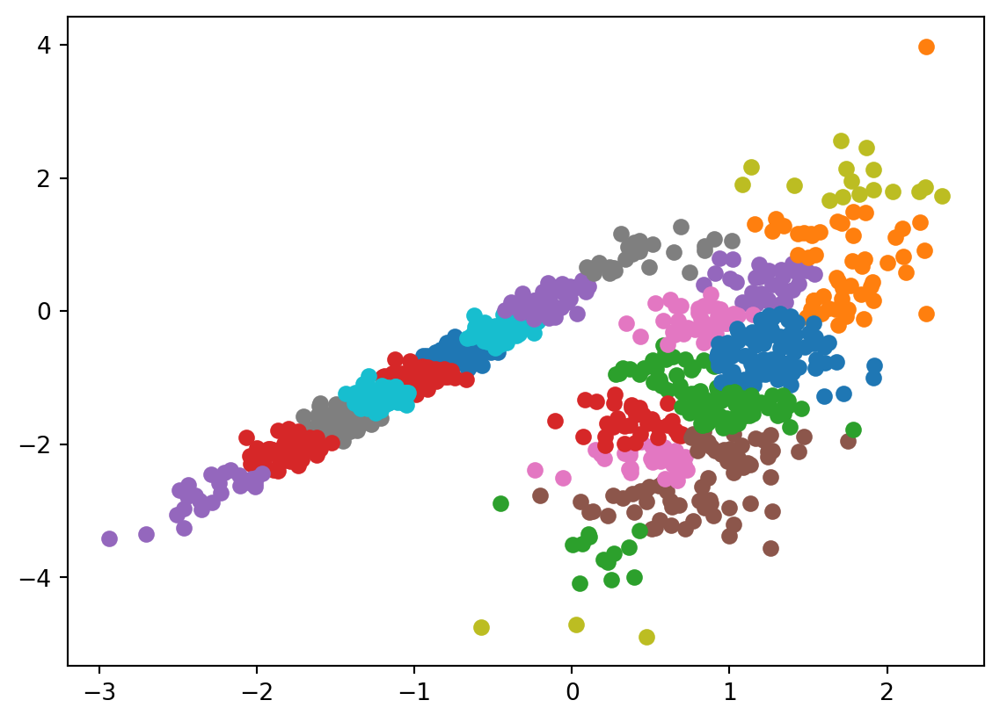

Clustering in machine learning is a type of unsupervised learning technique that involves grouping similar data points together into clusters. In this context, “unsupervised” means that the learning process is conducted without any predefined labels or categories; the algorithm itself discovers the inherent groupings in the data.
Types of Clustering Algorithms
Clustering algorithms come in various forms, each suited to handle different kinds of data and objectives:
Density-Based Clustering: These algorithms identify clusters as areas of high density separated by areas of low density. They excel in finding clusters of arbitrary shapes and typically do not assign outliers to any cluster.
Distribution-Based Clustering: In this approach, clusters are formed based on the likelihood of data points belonging to a certain distribution. A typical model is the Gaussian distribution, where the probability of belonging to a cluster decreases as the distance from the cluster’s center increases.
Centroid-Based Clustering: This is a widely used approach where clusters are represented by a central vector or a centroid. Each data point is assigned to the cluster with the nearest centroid. K-means is a popular example of centroid-based clustering.
Hierarchical-Based Clustering: These algorithms create a tree of clusters, which is particularly useful for hierarchical or nested data structures. It can be either divisive (top-down approach) or agglomerative (bottom-up approach).
Applications:
Customer Segmentation: Grouping customers based on purchasing behavior, interests, demographics, etc.
Anomaly Detection: Identifying unusual data points which can be useful in fraud detection.
Pattern Recognition: In areas like bioinformatics, speech recognition, and image analysis.
Common Clustering algorithms:
K-Means Clustering algorithm:
K-means clustering, the most commonly used clustering algorithm, partitions a dataset into K distinct clusters. It does this by assigning each data point to the nearest of K centroids, which are iteratively recalculated as the mean of the points assigned to them. This process repeats until the centroids stabilize, effectively minimizing the variance within each cluster. Widely appreciated for its simplicity and efficiency, this method assumes spherical clusters and can be sensitive to the initial placement of centroids and the presence of outliers.
Implementation
from numpy import unique, wherefrom matplotlib import pyplotfrom sklearn.datasets import make_classificationfrom sklearn.cluster import KMeans, DBSCAN# Initialize the data set we'll work withtraining_data, _ = make_classification( n_samples=1000, n_features=2, n_informative=2, n_redundant=0, n_clusters_per_class=1, random_state=4)# Define the KMeans modelkmeans_model = KMeans(n_clusters=2)# Assign each data point to a cluster using KMeanskmeans_result = kmeans_model.fit_predict(training_data)# Define the DBSCAN modeldbscan_model = DBSCAN(eps=0.3, min_samples=9) # Adjust 'eps' and 'min_samples' as needed# Assign each data point to a cluster using DBSCANdbscan_result = dbscan_model.fit_predict(training_data)# Get all of the unique clusters from DBSCAN resultsdbscan_clusters = unique(dbscan_result)# Plot the DBSCAN clustersfor dbscan_cluster in dbscan_clusters:# Get data points that fall in this cluster index = where(dbscan_result == dbscan_cluster)# Make the plot pyplot.scatter(training_data[index, 0], training_data[index, 1])# Show the DBSCAN plotpyplot.show()
C:\Users\rahul\AppData\Local\Programs\Python\Python310\lib\site-packages\sklearn\cluster\_kmeans.py:1416: FutureWarning:
The default value of `n_init` will change from 10 to 'auto' in 1.4. Set the value of `n_init` explicitly to suppress the warning

DBSCAN clustering algorithm:
DBSCAN (Density-Based Spatial Clustering of Applications with Noise) is a clustering algorithm that identifies clusters based on the density of data points, without requiring the number of clusters to be predefined. It categorizes points as core points, border points, or noise, depending on the number of nearby points (based on a set distance eps) and a minimum number of points (minPts) required to form a dense region. DBSCAN excels in discovering clusters of arbitrary shapes and sizes, and effectively distinguishes outliers, making it robust in handling noisy datasets. This makes it particularly useful in applications like anomaly detection, geospatial analysis, and image processing.
Implementation
from numpy import uniquefrom numpy import wherefrom matplotlib import pyplotfrom sklearn.datasets import make_classificationfrom sklearn.cluster import DBSCAN# initialize the data set we'll work withtraining_data, _ = make_classification( n_samples=1000, n_features=2, n_informative=2, n_redundant=0, n_clusters_per_class=1, random_state=4)# define the modeldbscan_model = DBSCAN(eps=0.25, min_samples=9)# train the modeldbscan_model.fit(training_data)# assign each data point to a clusterdbscan_result = dbscan_model.labels_# get all of the unique clustersdbscan_clusters = unique(dbscan_result)# plot the DBSCAN clustersfor cluster in dbscan_clusters:# get data points that fall in this cluster index = where(dbscan_result == cluster)# make the plot pyplot.scatter(training_data[index, 0], training_data[index, 1])# show the DBSCAN plotpyplot.show()

Hierarchical Clustering:
This creates a tree of clusters. It can be either agglomerative (merging small clusters into larger ones) or divisive (splitting clusters).
Agglomerative Hierarchy clustering algorithm: This bottom-up approach starts with each data point as an individual cluster and iteratively merges the closest pairs of clusters until all points are merged into a single cluster or a specified number of clusters is reached. The process of choosing which clusters to merge at each step is based on a distance metric and a linkage criterion (like single, complete, or average linkage). Agglomerative clustering is particularly useful for small to medium-sized datasets and is often visualized using a dendrogram, which shows the hierarchical relationship between clusters.
Implementation
import numpy as npimport matplotlib.pyplot as pltfrom sklearn.datasets import make_classificationfrom sklearn.cluster import AgglomerativeClustering# Initialize the data set we'll work withtraining_data, _ = make_classification( n_samples=1000, n_features=2, n_informative=2, n_redundant=0, n_clusters_per_class=1, random_state=4)# Define the modelagglomerative_model = AgglomerativeClustering(n_clusters=2)# Assign each data point to a clusteragglomerative_result = agglomerative_model.fit_predict(training_data)# Get all unique clustersagglomerative_clusters = np.unique(agglomerative_result)# Plot the clustersfor cluster_label in agglomerative_clusters:# Get data points that belong to this cluster cluster_points = training_data[agglomerative_result == cluster_label]# Make the plot plt.scatter(cluster_points[:, 0], cluster_points[:, 1], label=f'Cluster {cluster_label}')# Show the Agglomerative Hierarchy plotplt.legend()plt.show()

Divisive Hierarchy clustering algorithm: Conversely, Divisive clustering is a top-down approach. It begins with all data points in a single cluster and recursively splits the most heterogeneous cluster until each cluster contains only one data point or until a specified number of clusters is achieved. This method often involves analyzing the data to determine the best way to perform the splits, typically based on a measure of dissimilarity between data points.
Implementation
import numpy as npimport matplotlib.pyplot as pltfrom sklearn.datasets import make_classification# Initialize the data set we'll work withtraining_data, _ = make_classification( n_samples=1000, n_features=2, n_informative=2, n_redundant=0, n_clusters_per_class=1, random_state=4)# Define the model for divisive clusteringdef divisive_clustering(data, stopping_condition): clusters = [data] # Start with all data points in one clusterwhilelen(clusters) < stopping_condition:# Select the cluster to split (you can define your splitting criterion here) cluster_to_split = select_cluster_to_split(clusters)# Split the selected cluster into two subclusters subcluster1, subcluster2 = split_cluster(cluster_to_split)# Remove the original cluster and add the two subclusters clusters.remove(cluster_to_split) clusters.append(subcluster1) clusters.append(subcluster2)return clusters# Define your custom splitting criterion (e.g., based on variance, dissimilarity, etc.)def select_cluster_to_split(clusters):# For simplicity, we'll select the largest cluster to split.returnmax(clusters, key=len)# Define a function to split a cluster (you can implement your splitting logic)def split_cluster(cluster): midpoint =len(cluster) //2 subcluster1 = cluster[:midpoint] subcluster2 = cluster[midpoint:]return subcluster1, subcluster2# Perform divisive clustering with a specified stopping conditionclusters = divisive_clustering(training_data.tolist(), stopping_condition=4)# Plot the divisive clustersfor i, cluster inenumerate(clusters): cluster = np.array(cluster) # Convert back to NumPy array plt.scatter(cluster[:, 0], cluster[:, 1], label=f'Cluster {i+1}')plt.legend()plt.show()

Gaussian Mixture Model algorithm:
The Gaussian Mixture Model (GMM) algorithm is a probabilistic approach used for clustering and density estimation, overcoming K-means’ circular data limitation. GMM assumes data is generated from a mixture of Gaussian distributions, making it suitable for various data shapes. It iteratively estimates Gaussian parameters (mean, covariance, mixing coefficients) to fit data, providing soft cluster assignments based on probabilities. GMMs are versatile but sensitive to initializations, requiring a predefined cluster count.
Implementation
import numpy as npimport matplotlib.pyplot as pltfrom sklearn.datasets import make_classificationfrom sklearn.mixture import GaussianMixture# Initialize the data set we'll work withtraining_data, _ = make_classification( n_samples=1000, n_features=2, n_informative=2, n_redundant=0, n_clusters_per_class=1, random_state=4)# Define the modelgaussian_model = GaussianMixture(n_components=2)# Train the modelgaussian_model.fit(training_data)# Assign each data point to a clustergaussian_result = gaussian_model.predict(training_data)# Get all unique clustersgaussian_clusters = np.unique(gaussian_result)# Plot the Gaussian Mixture clustersfor cluster_label in gaussian_clusters:# Get data points that belong to this cluster cluster_points = training_data[gaussian_result == cluster_label]# Make the plot plt.scatter(cluster_points[:, 0], cluster_points[:, 1], label=f'Cluster {cluster_label}')# Show the Gaussian Mixture plotplt.legend()plt.show()

Mean-Shift clustering algorithm:
The Mean-Shift clustering algorithm is a density-based method used to find clusters in data without specifying the number of clusters in advance. It estimates the density of data points, iteratively shifts them towards denser regions, and identifies clusters where points converge. Mean-Shift is versatile and suitable for various cluster shapes and sizes, commonly used in applications like image segmentation and object tracking.
Implementation
from numpy import uniquefrom numpy import wherefrom matplotlib import pyplotfrom sklearn.datasets import make_classificationfrom sklearn.cluster import MeanShift# initialize the data set we'll work withtraining_data, _ = make_classification( n_samples=1000, n_features=2, n_informative=2, n_redundant=0, n_clusters_per_class=1, random_state=4)# define the modelmean_model = MeanShift()# assign each data point to a clustermean_result = mean_model.fit_predict(training_data)# get all of the unique clustersmean_clusters = unique(mean_result)# plot Mean-Shift the clustersfor mean_cluster in mean_clusters:# get data points that fall in this cluster index = where(mean_result == mean_cluster)# make the plot pyplot.scatter(training_data[index, 0], training_data[index, 1])# show the Mean-Shift plotpyplot.show()

BIRCH algorithm:
The BIRCH (Balanced Iterative Reducing and Clustering using Hierarchies) algorithm is a memory-efficient hierarchical clustering technique designed for large datasets, particularly numeric data. It builds a tree-like structure by recursively splitting data points into compact summaries that preserve distribution information, allowing scalable clustering. BIRCH is commonly combined with other clustering techniques and is well-suited for high-dimensional data. However, it requires data transformations for handling categorical values. This approach is frequently employed in exploratory data analysis and data compression, making it a valuable tool for various applications.
Implementation
from numpy import uniquefrom numpy import wherefrom matplotlib import pyplotfrom sklearn.datasets import make_classificationfrom sklearn.cluster import Birch# initialize the data set we'll work withtraining_data, _ = make_classification( n_samples=1000, n_features=2, n_informative=2, n_redundant=0, n_clusters_per_class=1, random_state=4)# define the modelbirch_model = Birch(threshold=0.03, n_clusters=2)# train the modelbirch_model.fit(training_data)# assign each data point to a clusterbirch_result = birch_model.predict(training_data)# get all of the unique clustersbirch_clusters = unique(birch_result)# plot the BIRCH clustersfor birch_cluster in birch_clusters:# get data points that fall in this cluster index = where(birch_result == birch_cluster)# make the plot pyplot.scatter(training_data[index, 0], training_data[index, 1])# show the BIRCH plotpyplot.show()

OPTICS algorithm:
OPTICS (Ordering Points To Identify the Clustering Structure) is a density-based clustering algorithm that excels in identifying clusters in data with varying density. It orders data points to detect different density clusters efficiently, similar to DBSCAN, and assigns specific cluster membership distances to each point. It doesn’t require specifying the number of clusters in advance, making it suitable for various dataset shapes and sizes
Implementation
from numpy import uniquefrom numpy import wherefrom matplotlib import pyplotfrom sklearn.datasets import make_classificationfrom sklearn.cluster import OPTICS# initialize the data set we'll work withtraining_data, _ = make_classification( n_samples=1000, n_features=2, n_informative=2, n_redundant=0, n_clusters_per_class=1, random_state=4)# define the modeloptics_model = OPTICS(eps=0.75, min_samples=10)# assign each data point to a clusteroptics_result = optics_model.fit_predict(training_data)# get all of the unique clustersoptics_clusters = unique(optics_result)# plot the OPTICS clustersfor optics_cluster in optics_clusters:# get data points that fall in this cluster index = where(optics_result == optics_cluster)# make the plot pyplot.scatter(training_data[index, 0], training_data[index, 1])# show the OPTICS plotpyplot.show()

Affinity Propagation clustering algorithm:
Affinity Propagation (AP) is a unique clustering algorithm that doesn’t require specifying the number of clusters beforehand. It uses data point communication to discover clusters, and exemplars are found as a consensus among data points. AP is ideal for scenarios where the number of clusters is uncertain, such as computer vision problems. This clustering algorithm models data points as nodes in a network and finds exemplar data points that represent clusters through message exchange. While effective for high-dimensional data and various cluster shapes and sizes, AP can be sensitive to the initial selection of exemplars and may not perform well on large datasets.
Implementation
from numpy import uniquefrom numpy import wherefrom matplotlib import pyplotfrom sklearn.datasets import make_classificationfrom sklearn.cluster import AffinityPropagation# initialize the data set we'll work withtraining_data, _ = make_classification( n_samples=1000, n_features=2, n_informative=2, n_redundant=0, n_clusters_per_class=1, random_state=4)# define the modelmodel = AffinityPropagation(damping=0.7)# train the modelmodel.fit(training_data)# assign each data point to a clusterresult = model.predict(training_data)# get all of the unique clustersclusters = unique(result)# plot the clustersfor cluster in clusters:# get data points that fall in this cluster index = where(result == cluster)# make the plot pyplot.scatter(training_data[index, 0], training_data[index, 1])# show the plotpyplot.show()

Source Code
---title: "Clustering"author: "Rahul Pulluri"date: "2023-10-27"image: "cluster.jpg"jupyter: python3---## What is Clustering?Clustering in machine learning is a type of unsupervised learning technique that involves grouping similar data points together into clusters. In this context, "unsupervised" means that the learning process is conducted without any predefined labels or categories; the algorithm itself discovers the inherent groupings in the data.## Types of Clustering AlgorithmsClustering algorithms come in various forms, each suited to handle different kinds of data and objectives:**Density-Based Clustering:** These algorithms identify clusters as areas of high density separated by areas of low density. They excel in finding clusters of arbitrary shapes and typically do not assign outliers to any cluster.**Distribution-Based Clustering:** In this approach, clusters are formed based on the likelihood of data points belonging to a certain distribution. A typical model is the Gaussian distribution, where the probability of belonging to a cluster decreases as the distance from the cluster's center increases.**Centroid-Based Clustering:** This is a widely used approach where clusters are represented by a central vector or a centroid. Each data point is assigned to the cluster with the nearest centroid. K-means is a popular example of centroid-based clustering.**Hierarchical-Based Clustering:** These algorithms create a tree of clusters, which is particularly useful for hierarchical or nested data structures. It can be either divisive (top-down approach) or agglomerative (bottom-up approach).## Applications:**Customer Segmentation:** Grouping customers based on purchasing behavior, interests, demographics, etc.**Anomaly Detection:** Identifying unusual data points which can be useful in fraud detection.**Pattern Recognition:** In areas like bioinformatics, speech recognition, and image analysis.## Common Clustering algorithms:### K-Means Clustering algorithm: K-means clustering, the most commonly used clustering algorithm, partitions a dataset into K distinct clusters. It does this by assigning each data point to the nearest of K centroids, which are iteratively recalculated as the mean of the points assigned to them. This process repeats until the centroids stabilize, effectively minimizing the variance within each cluster. Widely appreciated for its simplicity and efficiency, this method assumes spherical clusters and can be sensitive to the initial placement of centroids and the presence of outliers.**Implementation**```{python}from numpy import unique, wherefrom matplotlib import pyplotfrom sklearn.datasets import make_classificationfrom sklearn.cluster import KMeans, DBSCAN# Initialize the data set we'll work withtraining_data, _ = make_classification( n_samples=1000, n_features=2, n_informative=2, n_redundant=0, n_clusters_per_class=1, random_state=4)# Define the KMeans modelkmeans_model = KMeans(n_clusters=2)# Assign each data point to a cluster using KMeanskmeans_result = kmeans_model.fit_predict(training_data)# Define the DBSCAN modeldbscan_model = DBSCAN(eps=0.3, min_samples=9) # Adjust 'eps' and 'min_samples' as needed# Assign each data point to a cluster using DBSCANdbscan_result = dbscan_model.fit_predict(training_data)# Get all of the unique clusters from DBSCAN resultsdbscan_clusters = unique(dbscan_result)# Plot the DBSCAN clustersfor dbscan_cluster in dbscan_clusters:# Get data points that fall in this cluster index = where(dbscan_result == dbscan_cluster)# Make the plot pyplot.scatter(training_data[index, 0], training_data[index, 1])# Show the DBSCAN plotpyplot.show()```### DBSCAN clustering algorithm:DBSCAN (Density-Based Spatial Clustering of Applications with Noise) is a clustering algorithm that identifies clusters based on the density of data points, without requiring the number of clusters to be predefined. It categorizes points as core points, border points, or noise, depending on the number of nearby points (based on a set distance eps) and a minimum number of points (minPts) required to form a dense region. DBSCAN excels in discovering clusters of arbitrary shapes and sizes, and effectively distinguishes outliers, making it robust in handling noisy datasets. This makes it particularly useful in applications like anomaly detection, geospatial analysis, and image processing.**Implementation**```{python}from numpy import uniquefrom numpy import wherefrom matplotlib import pyplotfrom sklearn.datasets import make_classificationfrom sklearn.cluster import DBSCAN# initialize the data set we'll work withtraining_data, _ = make_classification( n_samples=1000, n_features=2, n_informative=2, n_redundant=0, n_clusters_per_class=1, random_state=4)# define the modeldbscan_model = DBSCAN(eps=0.25, min_samples=9)# train the modeldbscan_model.fit(training_data)# assign each data point to a clusterdbscan_result = dbscan_model.labels_# get all of the unique clustersdbscan_clusters = unique(dbscan_result)# plot the DBSCAN clustersfor cluster in dbscan_clusters:# get data points that fall in this cluster index = where(dbscan_result == cluster)# make the plot pyplot.scatter(training_data[index, 0], training_data[index, 1])# show the DBSCAN plotpyplot.show()```### Hierarchical Clustering: This creates a tree of clusters. It can be either agglomerative (merging small clusters into larger ones) or divisive (splitting clusters).**Agglomerative Hierarchy clustering algorithm:** This bottom-up approach starts with each data point as an individual cluster and iteratively merges the closest pairs of clusters until all points are merged into a single cluster or a specified number of clusters is reached. The process of choosing which clusters to merge at each step is based on a distance metric and a linkage criterion (like single, complete, or average linkage). Agglomerative clustering is particularly useful for small to medium-sized datasets and is often visualized using a dendrogram, which shows the hierarchical relationship between clusters.**Implementation**```{python}import numpy as npimport matplotlib.pyplot as pltfrom sklearn.datasets import make_classificationfrom sklearn.cluster import AgglomerativeClustering# Initialize the data set we'll work withtraining_data, _ = make_classification( n_samples=1000, n_features=2, n_informative=2, n_redundant=0, n_clusters_per_class=1, random_state=4)# Define the modelagglomerative_model = AgglomerativeClustering(n_clusters=2)# Assign each data point to a clusteragglomerative_result = agglomerative_model.fit_predict(training_data)# Get all unique clustersagglomerative_clusters = np.unique(agglomerative_result)# Plot the clustersfor cluster_label in agglomerative_clusters:# Get data points that belong to this cluster cluster_points = training_data[agglomerative_result == cluster_label]# Make the plot plt.scatter(cluster_points[:, 0], cluster_points[:, 1], label=f'Cluster {cluster_label}')# Show the Agglomerative Hierarchy plotplt.legend()plt.show()```**Divisive Hierarchy clustering algorithm:** Conversely, Divisive clustering is a top-down approach. It begins with all data points in a single cluster and recursively splits the most heterogeneous cluster until each cluster contains only one data point or until a specified number of clusters is achieved. This method often involves analyzing the data to determine the best way to perform the splits, typically based on a measure of dissimilarity between data points.**Implementation**```{python}import numpy as npimport matplotlib.pyplot as pltfrom sklearn.datasets import make_classification# Initialize the data set we'll work withtraining_data, _ = make_classification( n_samples=1000, n_features=2, n_informative=2, n_redundant=0, n_clusters_per_class=1, random_state=4)# Define the model for divisive clusteringdef divisive_clustering(data, stopping_condition): clusters = [data] # Start with all data points in one clusterwhilelen(clusters) < stopping_condition:# Select the cluster to split (you can define your splitting criterion here) cluster_to_split = select_cluster_to_split(clusters)# Split the selected cluster into two subclusters subcluster1, subcluster2 = split_cluster(cluster_to_split)# Remove the original cluster and add the two subclusters clusters.remove(cluster_to_split) clusters.append(subcluster1) clusters.append(subcluster2)return clusters# Define your custom splitting criterion (e.g., based on variance, dissimilarity, etc.)def select_cluster_to_split(clusters):# For simplicity, we'll select the largest cluster to split.returnmax(clusters, key=len)# Define a function to split a cluster (you can implement your splitting logic)def split_cluster(cluster): midpoint =len(cluster) //2 subcluster1 = cluster[:midpoint] subcluster2 = cluster[midpoint:]return subcluster1, subcluster2# Perform divisive clustering with a specified stopping conditionclusters = divisive_clustering(training_data.tolist(), stopping_condition=4)# Plot the divisive clustersfor i, cluster inenumerate(clusters): cluster = np.array(cluster) # Convert back to NumPy array plt.scatter(cluster[:, 0], cluster[:, 1], label=f'Cluster {i+1}')plt.legend()plt.show()```### Gaussian Mixture Model algorithm: The Gaussian Mixture Model (GMM) algorithm is a probabilistic approach used for clustering and density estimation, overcoming K-means' circular data limitation. GMM assumes data is generated from a mixture of Gaussian distributions, making it suitable for various data shapes. It iteratively estimates Gaussian parameters (mean, covariance, mixing coefficients) to fit data, providing soft cluster assignments based on probabilities. GMMs are versatile but sensitive to initializations, requiring a predefined cluster count.**Implementation**```{python}import numpy as npimport matplotlib.pyplot as pltfrom sklearn.datasets import make_classificationfrom sklearn.mixture import GaussianMixture# Initialize the data set we'll work withtraining_data, _ = make_classification( n_samples=1000, n_features=2, n_informative=2, n_redundant=0, n_clusters_per_class=1, random_state=4)# Define the modelgaussian_model = GaussianMixture(n_components=2)# Train the modelgaussian_model.fit(training_data)# Assign each data point to a clustergaussian_result = gaussian_model.predict(training_data)# Get all unique clustersgaussian_clusters = np.unique(gaussian_result)# Plot the Gaussian Mixture clustersfor cluster_label in gaussian_clusters:# Get data points that belong to this cluster cluster_points = training_data[gaussian_result == cluster_label]# Make the plot plt.scatter(cluster_points[:, 0], cluster_points[:, 1], label=f'Cluster {cluster_label}')# Show the Gaussian Mixture plotplt.legend()plt.show()```### Mean-Shift clustering algorithm:The Mean-Shift clustering algorithm is a density-based method used to find clusters in data without specifying the number of clusters in advance. It estimates the density of data points, iteratively shifts them towards denser regions, and identifies clusters where points converge. Mean-Shift is versatile and suitable for various cluster shapes and sizes, commonly used in applications like image segmentation and object tracking.**Implementation**```{python}from numpy import uniquefrom numpy import wherefrom matplotlib import pyplotfrom sklearn.datasets import make_classificationfrom sklearn.cluster import MeanShift# initialize the data set we'll work withtraining_data, _ = make_classification( n_samples=1000, n_features=2, n_informative=2, n_redundant=0, n_clusters_per_class=1, random_state=4)# define the modelmean_model = MeanShift()# assign each data point to a clustermean_result = mean_model.fit_predict(training_data)# get all of the unique clustersmean_clusters = unique(mean_result)# plot Mean-Shift the clustersfor mean_cluster in mean_clusters:# get data points that fall in this cluster index = where(mean_result == mean_cluster)# make the plot pyplot.scatter(training_data[index, 0], training_data[index, 1])# show the Mean-Shift plotpyplot.show()```### BIRCH algorithm:The BIRCH (Balanced Iterative Reducing and Clustering using Hierarchies) algorithm is a memory-efficient hierarchical clustering technique designed for large datasets, particularly numeric data. It builds a tree-like structure by recursively splitting data points into compact summaries that preserve distribution information, allowing scalable clustering. BIRCH is commonly combined with other clustering techniques and is well-suited for high-dimensional data. However, it requires data transformations for handling categorical values. This approach is frequently employed in exploratory data analysis and data compression, making it a valuable tool for various applications.**Implementation**```{python}from numpy import uniquefrom numpy import wherefrom matplotlib import pyplotfrom sklearn.datasets import make_classificationfrom sklearn.cluster import Birch# initialize the data set we'll work withtraining_data, _ = make_classification( n_samples=1000, n_features=2, n_informative=2, n_redundant=0, n_clusters_per_class=1, random_state=4)# define the modelbirch_model = Birch(threshold=0.03, n_clusters=2)# train the modelbirch_model.fit(training_data)# assign each data point to a clusterbirch_result = birch_model.predict(training_data)# get all of the unique clustersbirch_clusters = unique(birch_result)# plot the BIRCH clustersfor birch_cluster in birch_clusters:# get data points that fall in this cluster index = where(birch_result == birch_cluster)# make the plot pyplot.scatter(training_data[index, 0], training_data[index, 1])# show the BIRCH plotpyplot.show()```### OPTICS algorithm:OPTICS (Ordering Points To Identify the Clustering Structure) is a density-based clustering algorithm that excels in identifying clusters in data with varying density. It orders data points to detect different density clusters efficiently, similar to DBSCAN, and assigns specific cluster membership distances to each point. It doesn't require specifying the number of clusters in advance, making it suitable for various dataset shapes and sizes**Implementation**```{python}from numpy import uniquefrom numpy import wherefrom matplotlib import pyplotfrom sklearn.datasets import make_classificationfrom sklearn.cluster import OPTICS# initialize the data set we'll work withtraining_data, _ = make_classification( n_samples=1000, n_features=2, n_informative=2, n_redundant=0, n_clusters_per_class=1, random_state=4)# define the modeloptics_model = OPTICS(eps=0.75, min_samples=10)# assign each data point to a clusteroptics_result = optics_model.fit_predict(training_data)# get all of the unique clustersoptics_clusters = unique(optics_result)# plot the OPTICS clustersfor optics_cluster in optics_clusters:# get data points that fall in this cluster index = where(optics_result == optics_cluster)# make the plot pyplot.scatter(training_data[index, 0], training_data[index, 1])# show the OPTICS plotpyplot.show()```### Affinity Propagation clustering algorithm:Affinity Propagation (AP) is a unique clustering algorithm that doesn't require specifying the number of clusters beforehand. It uses data point communication to discover clusters, and exemplars are found as a consensus among data points. AP is ideal for scenarios where the number of clusters is uncertain, such as computer vision problems. This clustering algorithm models data points as nodes in a network and finds exemplar data points that represent clusters through message exchange. While effective for high-dimensional data and various cluster shapes and sizes, AP can be sensitive to the initial selection of exemplars and may not perform well on large datasets.**Implementation**```{python}from numpy import uniquefrom numpy import wherefrom matplotlib import pyplotfrom sklearn.datasets import make_classificationfrom sklearn.cluster import AffinityPropagation# initialize the data set we'll work withtraining_data, _ = make_classification( n_samples=1000, n_features=2, n_informative=2, n_redundant=0, n_clusters_per_class=1, random_state=4)# define the modelmodel = AffinityPropagation(damping=0.7)# train the modelmodel.fit(training_data)# assign each data point to a clusterresult = model.predict(training_data)# get all of the unique clustersclusters = unique(result)# plot the clustersfor cluster in clusters:# get data points that fall in this cluster index = where(result == cluster)# make the plot pyplot.scatter(training_data[index, 0], training_data[index, 1])# show the plotpyplot.show()```